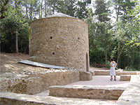
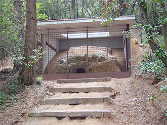

|
Paseo hasta laErmita de Sant Adjutori
y el horno íbero
Ermita de Sant Adjutori

 |
|
Situada en la sierra de Collserola, esta ermita fue objeto de un estudio con el fin de llevar a cabo su restauración. Es una capilla de planta redonda con cubierta semicónica con una única puerta desmesuradamente grande. Su fábrica da a entender que es románica (siglo XII) con una base pre-románica (siglo X) y también con reformas modernas hechas entre los siglos XVI-XVII. Estas reformas comportan que la capilla pase a ser el presbiterio de una nueva iglesia de una sola nave. Esta iglesia fue abandonada con la desamortización, momento hasta el cual había |
tenido dependencia del Monestir de St. Cugat; a partir de aquí se abandona.
Actualmente está restaurada tanto el interior como el exterior, así como los entornos, pero el interior queda cerrado al público. A pocos metros de distancia está situado el horno que lleva el mismo nombre.
Forn de Sant Adjutori, ¿íbero o romano?
Aunque siempre se lo ha catalogado de íbero, el Forn de Sant Adjutori es romano según consta en la carta arqueológica del Servei d'Arqueologia de la Generalitat de Catalunya.
Este hecho probablemente se debe a que se han encontrado restos de materiales ibéricos a sus proximidades. Eso hace pensar en la posibilidad de otro horno, éste sí, de cronología íbera, o bien hay que plantear el asentamiento próximo de un poblado íbero?. |
|
 |
Hoy por hoy, los entendidos sólo pueden hablar y señalar la existencia de una posible necrópolis cerca de la Torre Negra, una señorial masía feudal que une la zona natural del Parc de Collserola con el término municipal de St. Cugat del Vallès.
Duración: 30 minutos a ritmo tranquilo (ida)
Distancia: 500 metros
Dificultad: baja. Pista ancha
[ Ver mapa ]
|
|